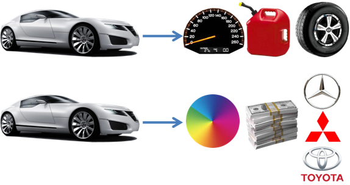

Bagian ini adalah permulaan dari Object Oriented Programming (OOP). Ada banyak konsep mengenai OOP seperti Abstraction, Encapsulation, Inheritance dan Polymorphism. Di bawah ini adalah penjelasan mengenai Abstraction dan Encapsulation. Meskipun memahami konsep ini dapat berguna, apabila Anda sedang buru-buru, lewati saja penjelasan tersebut sampai ke bagian class pada C#.
Abstraction atau dalam bahasa Indonesia Abstraksi, bukanlah mengenai kode program. Abstraksi hanyalah suatu proses dimana seorang programmer melihat contoh-contoh di kehidupan nyata dan menterjemahkan konsep-konsep yang didapat ke dalam suatu program. Sebagai contoh, seorang programmer game mula-mula akan melihat suatu mobil memiliki kecepatan, jumlah bensin dan jenis bannya. Sedangkan programmer retailer otomotif mungkin akan lebih peduli dengan harga, warna dan mereknya. Tentu saja mereka dapat memasukkan semua hal tersebut dan hal lainnya ke dalam program. Akan tetapi hal ini sangat bergantung dengan apa yang dilihat oleh programmer.

Pernahkah Anda melihat kapsul? Benda mengkilat yang kita makan ketika kita sakit. Sesungguhnya, bagian mengkilatnya hanya bagian luarnya. Di dalamnya terdapat banyak jenis obat dan vitamin yang membuat kita lebih sehat. Ada dua hal yang terkait dengan fakta ini:
Dengan cara yang sama, suatu class mengkapsulkan semua hal di dalamnya:
Kita mendefinisikan class di dalam namespace pada C#. Untuk mendefinisikan suatu class sederhana, kita tuliskan dalam namespace:
Access modifiers pada C# akan dijelaskan terakhir pada bagian ini. Untuk sekarang, cukup gunakan public untuk semua class. Sebagai contoh, kita dapat membuat class Mobil sebagai berikut:
Perhatikan bahwa class Mobil berada di dalam namespace Belajar1 setingkat dengan class Program (dalam hal level kurung kurawalnya). Di sini kita telah melakukan proses abstraksi. Pada class Mobil di atas, kecepatan, bensin, posisi dan nama adalah fields, sedangkan percepat, maju dan isiBensin adalah method. Field, Property dan Mehtod akan dijelaskan lain kali.
Suatu class digunakan untuk membuat objek. Untuk membuat objek, kita meng-instantiate suatu class dengan salah satu dari cara berikut:
[nama class] [nama objek] = new [nama class]();
[nama class] [nama objek] = new [nama class]() { field1=nilai1, field2=nilai2, ... };
[nama class] [nama objek] = new [nama class](param1, param2, ...);
Ketika kita membuat suatu objek dari suatu class, kita mendapatkan semua member dari class tersebut. Kita dapat mengkases member class tersebut dengan mengetikkan titik dan nama member yang bersangkutan. Sebagai contoh, kita tuliskan dalam class Program:
Program di atas akan menampilkan:
[baris kosong]
0
Ferrari
30000
Baris pertama kosong dan baris kedua bernilai 0 karena nilai default string dan int. Perlu diingat bahwa tidak baik untuk menggunakan variabel (field nama dan bensin) tanpa menginisialisasinya, akan tetapi program di atas hanyalah contoh. Inilah yang saya suka dari objek. Kita cukup menuliskan new Mobil() satu kali, dan di dalam objek tersebut kita sudah mendapatkan semua yang kita definisikan di dalam class Mobil.
Hampir selalu, kita perlu memberi nilai pada field atau property suatu objek sebelum kita dapat menggunakannya. Untuk itu, kita gunakan method constructor. Suatu constructor didefinisikan dengan cara:
public [nama class] (param1, param2, ...) {
//Hal-hal yang dilakukan ketika suatu objek diinstantiate (dibuat)
}
Sebagai contoh, tambahkan kode berikut ke dalam class Mobil:
Constructor di atas menerima tiga parameter. Parameter yang diberikan digunakan untuk menginisialisasi field-field di dalam objek. Perhatikan bahwa variabel this.nama dengan variabel nama di atas adalah dua variabel yang berbeda. Keyword "this" pada C# mewakili objek yang sedang aktif pada class. Ketika tidak ada parameter "nama", variabel "nama" akan mewakili field "nama" pada class. Akan sama saja apabila kita menulis "this.name" atau "name". Akan tetapi apabila parameter ada "nama", "nama" akan mewakili parameter tersebut, dan untuk mewakili field nama, kita hanya dapat menggunakan "this.nama". Untuk menggunakan constructor untuk membuat objek, kita menggunakan kode seperti berikut:
Perhatikan bahwa karena constructor baru kita, perintah-perintah new Mobil() sebelumnya menjadi error karena kita telah mendeklarasikan constructor kita. Kita dapat membuat constructor lain di dalam class Mobil untuk menghindari error tersebut:
Menurut pendapat saya, membuat constructor kosong seperti ini berbahaya karena membuat kita dapat lupa mengisi field di dalam objek kita.
Meskipun constructor sangatlah penting, Saya tidak pernah benar-benar menggunakan kebalikannya: Destructor di dalam suatu program. Tujuan utama dari destructor biasanya untuk membebaskan memoi. Akan tetapi dikarenakan C# sudah memiliki "garbage collector" untuk membebaskan memori yang tidak digunakan lagi, destructor sangat jarang digunakan. Untuk membuat suatu destructor, cukup membuat suatu method dengan nama yang sama dengan nama class diawali dengan tanda tilde (~). Sebagai contoh:
Access modifier menentukan apakah suatu class, method, field, property, event atau hal-hal lainnya dapat diakses di luar class induknya.
Perlu diketahui bahwa class puncak yang langsung berada di bawah suatu namespace hanya dapat dideklarasi public atau internal. Mereka tidak dapat dideklarasi private, protected atau protected internal. Hanya class di dalam class lain yang dapat dideklarasi seperti itu. Perlu diketahui juga bahwa kata kunci static dan virtual bukanlah suatu access modifier.